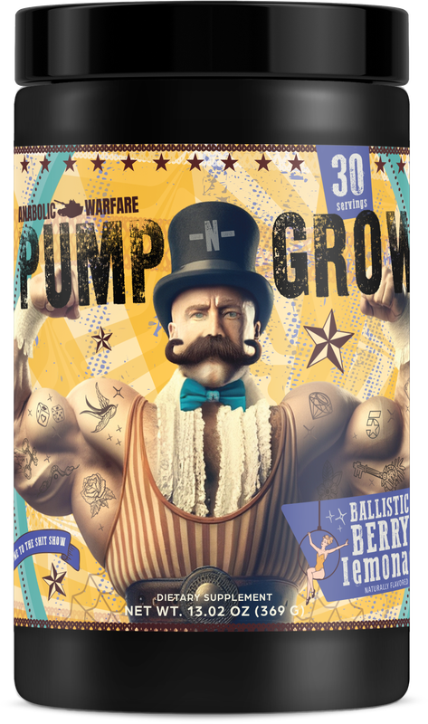

Product imagery supplied by the retailer. Packaging may vary — verify the Supplement Facts panel on the container you receive.
Anabolic Warfare
Pump-N-Grow
Our analysis — editorial take, not from the label
A caffeine-free pump specialist meant for stacking with a separate stimulant — the label fully discloses all six actives, led by 4g citrulline malate, 2g betaine, 1.5g beta-alanine, and 500mg Nitrosigine.
- Caffeine
- 0 mg
- Citrulline
- 4 g malate
- Beta-alanine
- 1.5 g
- Servings
- 30
- Price tier
- Mid-range
Price tier: Mid-range · relative cost per full serving across this database
We don't list dollar prices — they change daily and go stale. Check the live price instead:
View current price Compare all 38 formulasAffiliate link — Scoop Sense may earn a commission at no additional cost to you.
Available in flavors such as Ballistic Berry Lemonade, Fruit Explosion, and Operation OJ, sweetened with sucralose.
Label verified: July 2026 · View supplement facts image
Label data
Per full serving · 30 servings per container · from the manufacturer's panel
| Caffeine | 0 mg |
| L-Citrulline Malate 3:1 | 4 g |
| Betaine Anhydrous | 2 g |
| Beta Alanine | 1.5 g |
| Nitrosigine (Inositol-Stabilized Arginine Silicate) | 500 mg |
| Proprietary blend | No |
Primary label source: Anabolic Warfare — Pump-N-Grow (official product page) · verified July 2026
Product details
What is Anabolic Warfare Pump-N-Grow?
A caffeine-free pump specialist meant for stacking with a separate stimulant — the label fully discloses all six actives, led by 4g citrulline malate, 2g betaine, 1.5g beta-alanine, and 500mg Nitrosigine. It sits in the stim-free tier of the Scoop Sense database, which spans 0–400 mg of caffeine per serving. Everything on this page comes from the manufacturer's supplement facts panel as of July 2026 — never from the marketing page.
Key ingredients & studied doses
- L-Citrulline Malate 3:1 · 4 g. Below the 6-8g of citrulline malate typically used in nitric-oxide pump research, though still a meaningful non-stimulant pump dose on its own.
- Betaine Anhydrous · 2 g. Matches the 2.5g-per-day amount most often used in betaine performance research fairly closely; the largest single dose on this panel after citrulline.
- Beta Alanine · 1.5 g. Below the 3.2-6.4g daily loading protocol used in beta-alanine research; still enough to cause mild tingling in sensitive users.
- Nitrosigine (Inositol-Stabilized Arginine Silicate) · 500 mg. At the low end of Nitrosigine's published dosing; most of its vasodilation research uses 1,500mg per day.
Cautions
- Stimulant-free — 0mg caffeine, so it can be stacked with a separate stim product or used later in the day.
- 1.5g beta-alanine may cause a mild tingling or flushing sensation.
- The panel lists six actives in total from a single 12.3g scoop; the two not shown above are 1g L-arginine pyroglutamate and 1g highly branched cyclic dextrin (Cluster Dextrin).
Flavors & sweetener
Available in flavors such as Ballistic Berry Lemonade, Fruit Explosion, and Operation OJ, sweetened with sucralose.
Who it's best for
People who train late in the day or want zero caffeine — the effects here come from the non-stimulant ingredients. Derived from the label figures above — not medical advice.
How we log this label
Every entry is built the same way: we read the current supplement facts panel, log each disclosed dose, compare it against the amounts used in published research, flag proprietary blends, and state the cautions plainly. The full methodology explains each step.
Common questions about Anabolic Warfare Pump-N-Grow
Is Anabolic Warfare Pump-N-Grow really caffeine-free?
The label lists 0 mg of caffeine. It is still an active formula — ingredients like L-Citrulline Malate 3:1 and Betaine Anhydrous are dosed to have effects — so read the full label rather than treating stim-free as effect-free.
Why does Anabolic Warfare Pump-N-Grow make my skin tingle?
The 1.5 g of beta-alanine. The prickling (paresthesia) in the face, neck, and hands is generally considered harmless, is dose-dependent, and fades on its own — typically within about an hour. Most beta-alanine studies use 3.2 g per day.
Does Anabolic Warfare Pump-N-Grow disclose every dose?
Yes — the label lists an individual amount for each ingredient, with no proprietary blends. That is what the "label fully disclosed" tag on Scoop Sense means, and it is what lets each dose be compared against the amounts used in published research.
Do the numbers for Anabolic Warfare Pump-N-Grow assume one scoop or two?
All figures on this page are per full labeled serving. The panel lists six actives in total from a single 12.3g scoop; the two not shown above are 1g L-arginine pyroglutamate and 1g highly branched cyclic dextrin (Cluster Dextrin)..
Reviews
Scoop Sense doesn't collect user reviews, and we won't invent them. Our editorial read: A caffeine-free pump specialist meant for stacking with a separate stimulant — the label fully discloses all six actives, led by 4g citrulline malate, 2g betaine, 1.5g beta-alanine, and 500mg Nitrosigine.
Read customer reviews on AmazonAffiliate link — Scoop Sense may earn a commission at no additional cost to you.